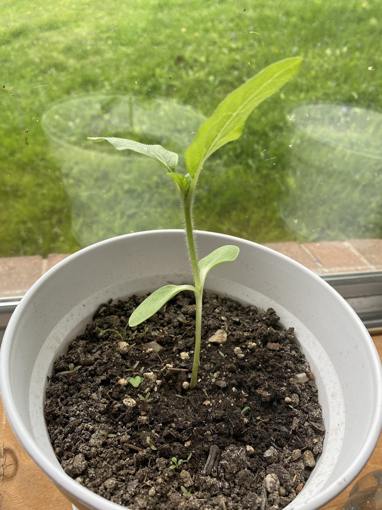
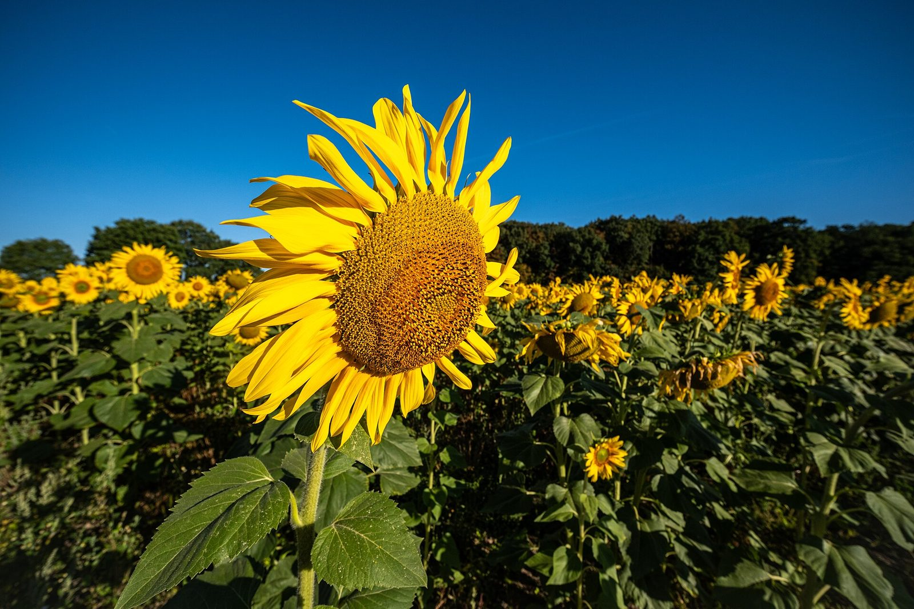
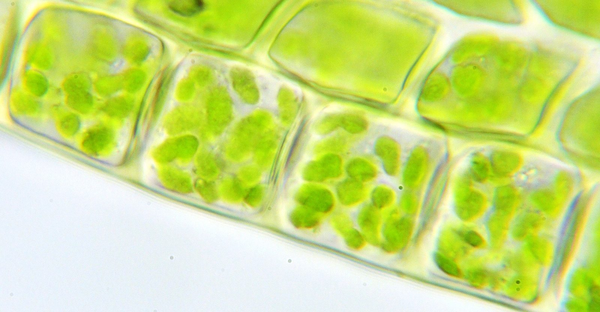

The sunflower in the sealed pot
Old science books had plates: full pages of pictures that showed an experiment. This is Plate 1 from a book by Stephen Hales, an English scientist.
In 1724, Hales grew a sunflower in a pot. He covered the soil with a sheet of lead, so water could only leave through the plant. He poured water in through a tube. Then he weighed the whole thing every morning and every evening.
Hales knew water went in. He wondered if air went in too. His plate shows the pot. It doesn’t show what you learned this week. Your plate will.
Build Plate 17 in VR
Build the sunflower, what goes in, what comes out, and what it builds. Your headset photo is your plate.
Tap the box next to each step when you finish it.
- 🖥️Before you put on your headset
- Step 1 · Know your modelsType the gray word in the Filter models box. This list is also in VR: open your menu, click the Canvas tab, then pick our assignment.

🌻 The plantPhoto: LarsenColes, CC BY-SA 4.0- Sunflower Stage 4 Sunflower
- Stone Planter 1x1m Planter

⬇️ What goes inPhoto: Dietmar Rabich, CC BY-SA 4.0- Sun (Optima Domi) Sun
- CO2 Molecule (Locked) × 3 CO2
- H2O Molecule (Locked) × 2 H2O
- Water Barrel Water Barrel
- Red Ray × 3 Red Ray

⬆️ What comes out, and what it buildsPhoto: Kelvinsong, CC BY 3.0- O2 Molecule (Locked) O2 Molecule
- Blue Ray Blue Ray
- Glucose Molecule (Locked) Glucose
New words: CO2 is carbon dioxide, a gas in the air. H2O is water. O2 is oxygen. Glucose is a sugar the plant makes and builds with. - 🥽In VR
- Step 2 · Go in🔗 First time only: connect Canvas at xr.optimaed.com before you go in. The steps are in Having trouble in VR? below.Put on your headset and open the On-Demand app. Click the Explore tab. Type Classical in the Filter environments box. Click Classical Outdoor Classroom, then click Begin Solo.
- Step 3 · Build the platePress the top button on your right controller to open your menu. Click the Models tab.
- Put the sunflower in the planter. Make it tall.
- Hang the Sun up high. Float the CO2 by the leaves.
- Put the Water Barrel and the H2O low, by the planter.
- Aim a Red Ray from the Sun, the CO2 and the H2O at the plant. Red means in.
- Put O2 by the leaves with a Blue Ray pointing away. Blue means out.
- Set the Glucose against the stem.
✋ To move a model: grab it with the palm trigger (the button under your middle finger). Turn and move it with the thumbstick. Grab it with both palm triggers to make it bigger or smaller. - Step 4 · Explain it out loudWalk around your plate. Point and say:
- What comes in at the leaves, and where it came from.
- What the roots take in, and how much the soil gives.
- What the plant does with the glucose.
- Step 5 · Extra detailVR onlyShow the soil’s tiny share. Bring out a Granite Block Granite. Shrink it to the size of a pebble and set it by the roots. Soil minerals are only a tiny part of a plant. Skip this if you run out of time.
- Step 6 · Snap and submitStand back so you can see the whole plant and every arrow. Open your menu, click Library, then Camera. Move the tablet until it all fits, then click Take photo. Now click the Canvas tab and pick 17.01 VR · Plate 17. Click Choose from My Files, pick your photo, click Use this file, then Submit to Canvas. Look for the green Submitted tag.🔁 Want to fix something? Move the models, take a new photo and submit again.
- ✅After
- Step 7 · Check and leavePress the Meta button on your right controller, then click Quit. Take off your headset and open the Canvas assignment. Your photo should be there. Not there? Open Having trouble in VR? below for two other ways to turn it in.
🛟Having trouble in VR?Steps with pictures, and a how-to video
How-to video: Optima On-Demand and Canvas
These pictures come from other maps. Your map will be Classical Outdoor Classroom, but the buttons are the same.
🖥️ First time only: connect Canvas (on your computer)
 1Log in
1Log inGo to xr.optimaed.com on your computer. Log in with the same login you use in VR.
 2Connect to Canvas
2Connect to CanvasClick Connect to Canvas. Log in with your usual Canvas username and password, then click Authorize. You will see Canvas connection completed.
 3Find our class
3Find our classClick Canvas on the left and pick our class. Our assignments show up. You only do this part one time.
📄 Only if the assignment has a file
 4Get the file ready
4Get the file readyOpen the assignment and click Open in Canvas to download the file. Then click My Files and Upload File.
🥽 In the headset
 5Explore tab
5Explore tabPut on your headset. Click the Explore tab and type the map’s name in Filter environments.
 6Begin Solo
6Begin SoloClick the map, then click Begin Solo.
 7Read the assignment
7Read the assignmentPress the top button on your right controller to open your menu. Click the Canvas tab and pick our assignment to read the directions. Tip: point at a mint side grip and squeeze to pull the tablet to your hand.
 8Bring out the models
8Bring out the modelsClick Models. Type the exact name in the search box, or scroll with your thumbstick. Click a model to bring it out.
 9Move and resize
9Move and resizeGrab a model with the palm trigger. Turn and move it with the thumbstick. Use both palm triggers to make it bigger or smaller.
 10Need a file?
10Need a file?Click Library, then Files. Pick your file to place it in the world, next to your model.
 11Take a photo
11Take a photoClick Library, then Camera. Move the tablet until your whole model fits. Slide Height or the zoom bar if you need to. Click Take photo.
 12Pick your photo
12Pick your photoClick the Canvas tab and pick our assignment. Click Choose from My Files, pick your newest photo, then click Use this file.
 13Submit to Canvas
13Submit to CanvasClick Submit to Canvas and look for the green Submitted tag. To leave VR, press the Meta button on your right controller, then click Quit.
🔁 Didn’t work in VR? Two other ways
 14Use the website
14Use the websiteGo to xr.optimaed.com and click Canvas. Pick our assignment, click Choose from My Files, pick your photo and submit it.
Your photos save to My Files at xr.optimaed.com on their own. You can also download your photo there and upload it to the Canvas assignment yourself.
- Your photo shows the sunflower in its planter, CO2 at the leaves, water at the roots, the Sun, oxygen going out, and glucose by the stem.
- Red arrows point in. A blue arrow points out.
Photo submitted!
Plate 17 is bound into your Notebook Chain, with a gold frame.
Follow the atom
At each fork, drag the atom onto the way it goes next, or just tap that way.
Claim, Evidence, Reasoning
Where does a sunflower get the material it builds its body from? Use your route map AND Hales’s numbers.
- Both routes finished.
- Claim 8+ words, Evidence 25+ words, Reasoning 20+ words.
Plate 17 is in your notebook!
Now download your answers below and upload the file to Canvas.
How to turn it in: click the green button and choose Save as PDF. Then upload that file to the Canvas assignment.